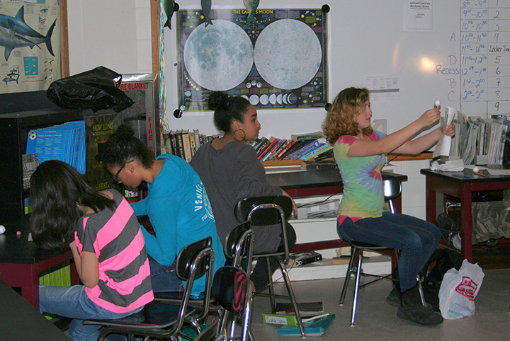

Our goal for this lab was to move instruction beyond rote memorization of phase names, and instead, give students opportunities to practice using scientific models to test their ideas and predictions around the Moon. The Next Generation Science Standards call for increased opportunities to engage in genuine scientific practice, like those implemented in the WWT Moon Phases Lab. Participating teachers cited this as being a particularly valuable aspect of the lab that they would like to incorporate further in their classes with other topics.